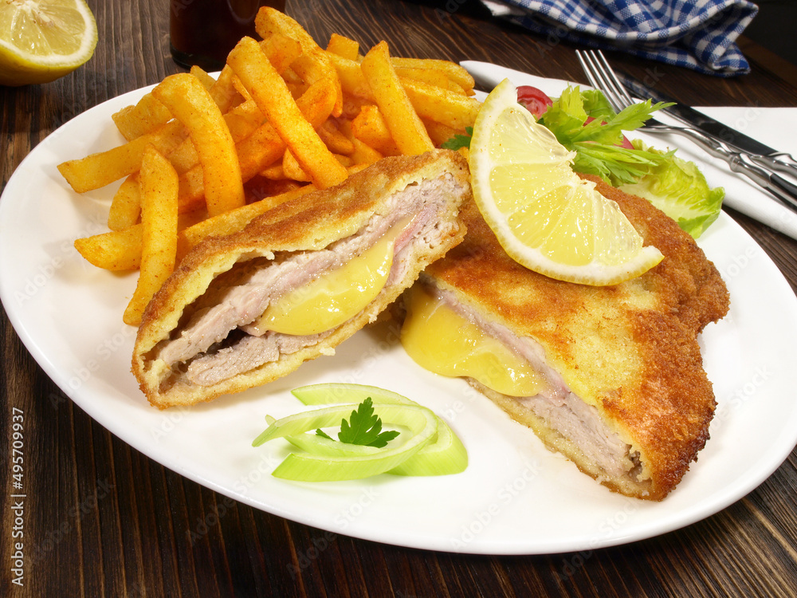

Les Frites Cordon Bleu du RU
Découvrez les avis et donnez votre note

Un plat unique qui mélange la croustillance des frites et la gourmandise du cordon bleu, le tout servi au restaurant universitaire. Plutôt original et généreux, mais qu'en pense la communauté ?
4.1/5
Moyenne des notes
328
Notes reçues
#12
Classement global
Commentaires Récents